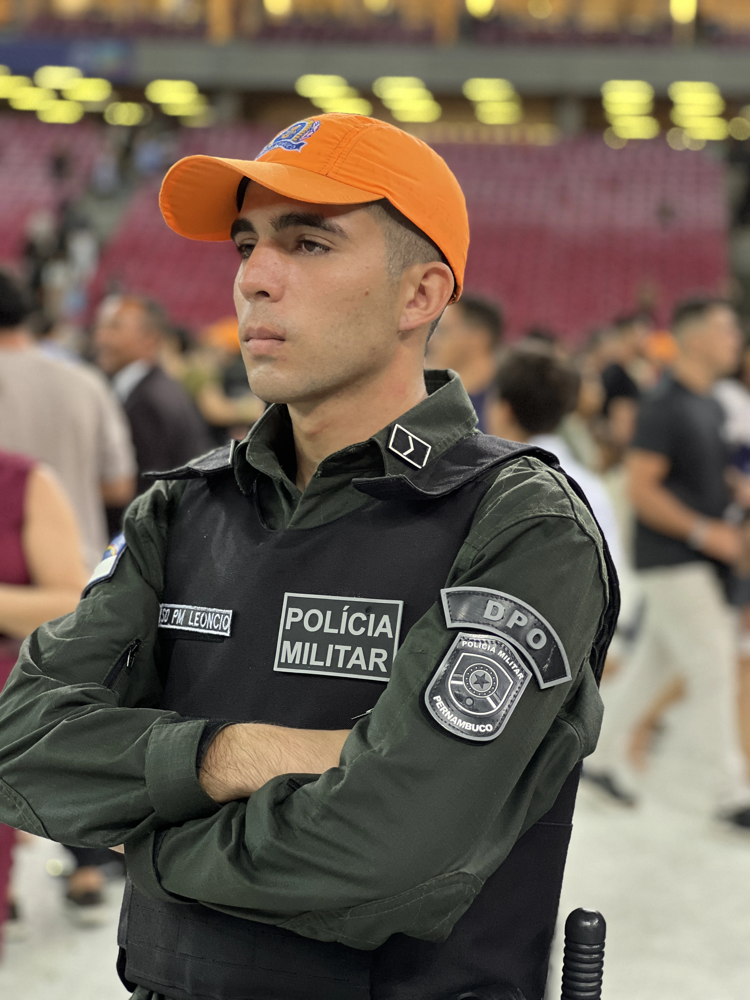

🎯
Diagnóstico do seu nível
Com apoio de IA, você descobre onde realmente está e para de estudar no escuro achando que está avançando.
São 5 dias ao vivo, de graça, com o Prof. Everton Mota. É o tempo que você precisa para entender como se estuda de verdade para a PMPE. Dá o play no vídeo e entra na operação.
O que separa quem passa de quem não passa não é capacidade. É método e decisão.
Clica no botão, garante sua vaga no grupo e receba o aviso de cada live.
Todas as lives às 12h12, dentro do grupo. Chegue no horário: quem atrasa perde a missão do dia.
Everton conta a própria história, de quem duvidou dele a quem foi aprovado 15 vezes. Você vai entender por que isso também cabe na sua vida.
Um teste rápido, com apoio de inteligência artificial, que mostra exatamente onde você está hoje. Também abrimos uma prévia da nossa plataforma.
O professor pega diagnósticos reais de participantes, analisa ao vivo e mostra o que cada resultado muda na hora de montar o estudo.
O MDT aplicado na prática, para você parar de se afogar em conteúdo e começar a resolver questão com método.
Depoimentos de quem já vestiu a farda e a apresentação da Mentoria CPPEM, para quem decidir ir até o fim.

Aprovado em 15 concursos públicos, o Prof. Everton Mota não ensina pelo livro. Ensina pela estrada que ele mesmo caminhou. Há mais de 7 anos prepara candidatos para carreiras policiais no Nordeste, com mais de 14 mil aprovados.
Nesses 5 dias, ele mostra ao vivo o que separa o aprovado do eliminado na PMPE: o método. Sem enrolação e sem teoria solta. É o caminho que funciona pra quem trabalha, tem pouco tempo e já cansou de tentar sozinho.
Não é live motivacional. Você sai daqui com diagnóstico, método e direção, sem pagar nada.
Com apoio de IA, você descobre onde realmente está e para de estudar no escuro achando que está avançando.
A forma certa de resolver questão e fixar conteúdo, aplicada ao vivo com você, do zero.
Nada genérico: cinco dias falando da banca, do edital e da realidade de quem quer a farda aqui em Pernambuco.
Você pergunta, ele responde. Direção de quem foi aprovado 15 vezes, sem intermediário.
Você vê por dentro as telas e ferramentas que os nossos alunos usam todo dia para estudar.
Você deixa de estudar sozinho: entra num grupo com centenas de concurseiros na mesma missão.





É totalmente gratuito. Você só se inscreve e entra no grupo para receber os avisos e o link das lives. Não cobramos nada pelos 5 dias.
De 24 a 28 de julho, sempre às 12h12. Os avisos e o link de cada live saem no grupo exclusivo do desafio. É por isso que a inscrição é obrigatória.
As lives ficam disponíveis por tempo limitado. Mas quem assiste ao vivo participa do diagnóstico e tira dúvida com o professor. Faça o possível para estar presente.
Não. O desafio serve tanto para quem está começando do zero quanto para quem já tentou, não passou e quer entender o que fez de errado.
O foco é a PMPE. Mas o método e a base que você constrói servem para qualquer carreira policial: PM, PC, PRF, PF e Penal.
No Dia 5 apresentamos a Mentoria CPPEM, para quem quiser continuar com acompanhamento. Comprando ou não, o conteúdo dos 5 dias é entregue por inteiro.
São 5 dias e é de graça. Pode ser a diferença entre mais um ano estudando errado e o ano em que você finalmente veste a farda.
Início dia 24/07, às 12h12 · Vagas limitadas no grupo